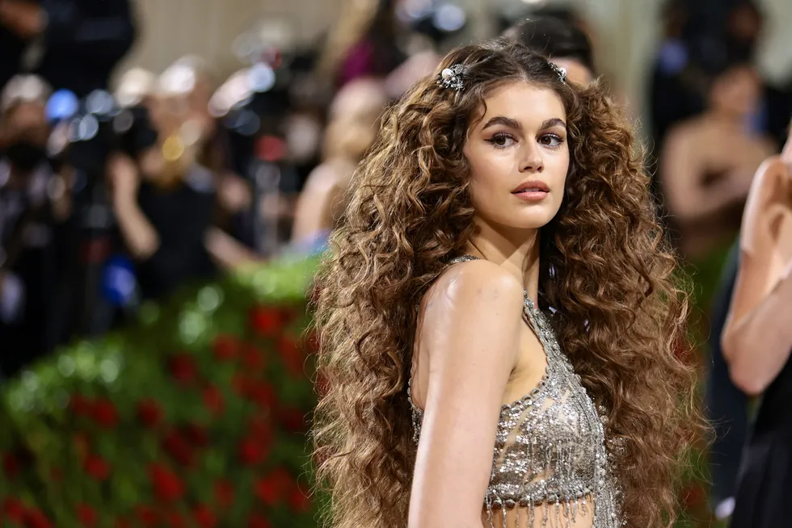

Gala MET 2022: Kaia Gerber sorprende con melena XXL rizada inspirada en las mujeres nobles de los 60
Gala MET 2022: Kaia Gerber sorprende con melena XXL rizada inspirada en las mujeres nobles de los 60 Con un claro homenaje a las mujeres nobles de los años 60 a través de su impecable melena XXL llena de rizos, Kaia Gerber deja el listón de la gala MET por todo lo alto.
Recogidos glamurosos, tintes de colores inesperados, melenas con ondas perfectamente peinadas como las divas más reconocidas de Hollywood... Nada de eso ha podido hacer frente a una de las tendencias de pelo que arrasa en cada gala MET, la de las melenas XXL con extensiones. En esta ocasión, de la mano de la inigualable Kaia Gerber, que si en la primera edición del acto celebrado en septiembre homenajeaba a la diva Bianca Jagger a través de su sofisticada melena con corte bob, ahora nos inspira con un melenón celestial que ha causado furor en redes.
La modelo nos dejó sin aliento con su llegada a la alfombra roja. Sabíamos que su conjunto iba a superar todas las expectativas, pero no a estos niveles. Kaia apostaba por la maxi melena a través de las extensiones, porque -aparte de que su melena no era tal-, resulta realmente complicado conseguir un pelo así de perfecto y largo, y menos en tan poco tiempo.
Pero, sin duda, Gerber lo ha sabido defender como si de su propio cabello se tratara con unos rizos súper marcados dignos de revista que la han proclamado como la 'celebritie' con el peinado más explosivo de la MET.
Se trata de una obra maestra elaborada por el maestro en peinados Guido Palau. ¿Su inspiración? Teniendo en cuenta que el dress code de este año es el glamour resulta más que evidente. Con este reluciente e impecable peinado, Gerber homenajea a las mujeres de la alta sociedad de los años 60 con sus largas y rizadas melenas.
Una apuesta de lo más favorecedora gracias a su arrollador volumen y sus espectaculares rizos perfectamente formulados que caían sobre su espalda como si de una cascada se tratase. Pero si esto no resultaba suficiente, Kaia lució -además- dos horquillas repletas de pedrería a ambos lados de su melena para destacar también su impecable maquillaje realizado por Naoko Sofía Cintu, con eyeliner y cejas perfectamente marcadas hacia arriba.
Su impactante vestido también fue una gran ayuda para que Kaia se convirtiera en una de las divas mejor vestidas de la noche. Con un reluciente vestido plateado con brillos y transparencias de Alexander McQueen, Gerber remató a la perfección su perfecta melena rizada castaña.